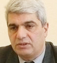

ЧТО ЖЕ ПРОИСХОДИТ В ГРУЗИНО – РОССИЙСКИХ ОТНОШЕНИЯХ?
Обострение отношений между Грузией и Россией будет иметь серьезные последствия не только для этих двух стран и народов, но и всего южнокавказского региона в целом. Уже тот факт, что введенные Россией против Грузии санкции также больно бьют по Армении, говорит сам за себя. Так, закрытие Россией еще до начала грузино–российского ''шпионского скандала'' пропускного пункта ''Верхний Ларс'' на россйско–грузинской границе серьезно ударило по экономике Армении и ее торговле с Россией. Т.к. система санкций против Грузии со стороны России только набирает обороты, не исключен и вариант прекращения подачи российского газа в Грузию, что автоматически означает и прекращение подачи газа в Армению.
Что же так задело Россию, что она готова на такие жесткие шаги в отношении Грузии? И это даже в том случае, что страдает при этом ее единственный стратегический партнер в регионе (речь идет об Армения, где расквартирована единственная российская военная база на Южном Кавказе, в выводе российских баз из Грузии уже никто не сомневается). Более того, Армения сразу после начала ''шпионского скандала'' присоединилась к Заявлению стран членов Организации Договора Коллективной Безопасности (сегодня членами Договора являются Россия, Беларусь, Армения, Казахстан, Киргизия, Таджикистан и Узбекистан) и потребовала от грузинских властей освобождения российских офицеров. Но даже такое пророссийское (нам кажется недальновидное и ошибочное!) поведение армянских властей не защитило Армению от российских санкций. Как представляется причина в том, что Россия смирилась с потерей Южного Кавказа. Грузия и Азербайджан ориентируются на систему безопасности НАТО, а Армения, оставаясь единственным партнером России в регионе, не сможет изменить ситуацию. Более того, Россия, не имея общей сухопутной границы с Арменией, с большим трудом сможет содержать свою военную базу. Грузия, в свою очередь, ограничила пролеты российских военных самолетов над своей территорией и доставку по суше военных грузов, идущих по ее территории и обеспечивающих работу российской военной базы в Армении. А такая шумная и болезненная реакция России на потерю Южного Кавказа, как нам кажется, предназначена лишь для внутреннего пользования. Т.е. российские власти ''говорят'' своим гражданам - вот видите как мы боролись и боремся за стратегические интересы России. Тем самым делается попытка отвлечь внимание своих граждан от ответственности за провалы в политике со странами СНГ.
Конечно, интересно проанализиривоть и конкретные причины обострения отношений между Грузией и Россией. Их много, включая требование Грузии по выводу российских военных баз со своей территории. Однако две из них, как представляется, являются определяющими: Первая причина – это нерешённость конфликтов в Абхазии и Южной Осетии и недовольство официального Тбилиси действиями России в этих непризнанных субьектах. Действительно, Россия в обход Тбилиси раздает в зонах этих конфликтов российские паспорта, открыто поддерживает сепаратистские тенденции лидеров Абхазии и Южной Осетии. Достаточно очевидна незаинтересованность России в скором решении этих конфликтов, т.к. нерешенность их позволяет ей сохранять влияние на Южном Кавказе. Вторая причина – это четкая ориентация Грузии на европейскую и евроатлантическую интеграции, что достаточно болезненно воспринимается путинской Россией, которая собственно еще до ''шпионского скандала'' начала вводить санкции против Грузии. Так несколько месяцев назад был введен запрет на ввоз в Россию грузинских вин, минеральных вод и некоторых продуктов питания. В июле сего года Россией был закрыт упоминавшийся выше контрольно-пропускной пункт ''Верхний Ларс''.
Конечно, не может не беспокоить непропорциональность ответа России на арест грузинскими властями нескольких российских офицеров, подозреваемых в шпионаже. Дипломатическая практика показывает, что другая сторона, в данном случае Россия, вполне могла бы ограничиться высылкой нескольких грузинских военных и дипломатов. Вспомним опыт того же Советского Союза, когда в начале семидесятых годов в ответ на высылку группы советских дипломатов из Лондона, Москва ответила ''пропорционально'', выслав такое же число английских дипломатов из Москвы. Власти же сегодняшней России начали использовать механизм широкомасштабых санкций, включающих закрытие всех транспортных коммуникаций, связывающих Россию и Грузию, отмену денежных и почтовых переводов, приостановку авиасообщения и многое другое. Очень сомнительным выглядит кампания по выдворению лиц грузинской национальности из Москвы и других крупных городов России, под тем предлогом, что якобы они не оформлялись соответствующим образом в миграционных службах, а потому и не имели права на получение работы. Эта кампания сопровождается массовыми нарушениями прав человека - уже сегодня поступает из России обеспокаивающая информация об избиениях и убийствах лиц грузинской национальности на волне поднятой антигрузинской кампании. Это не может не беспокоить и по той причине, что эта кампания ''плавно'' переходит в антикавказскую кампанию, т.к. очень активно по российским СМИ обсуждается тема ''завоевания'' кавказцами российских рынков.
В данной ситуации важно, что международное сообщество в лице ОБСЕ, СЕ и США выступили против введенных Россией санкций, считая их неадекватными и непропорциональными шагами. Совет Безопасности ООН также проявил принципиальность и заблокировал инициативу России, где делалась попытка осудить арест российских военных грузинскими властями. В блокировании предложенной Россией Резолюции активное участие принимали не только США, но и Франция с Великобританией. Так же важно, что 26 членов НАТО, на заседании министров иностранных дел этой организации, прошедшем в конце сентября в Словении единогласно заявили о согласии начать сотрудничество с Грузией на уровне интенсивного диалога, что фактически означает начало процедуры членства Грузии в НАТО.
Посмотрим, как будут развиваться события далее, однако ясно, что если Россия пойдет на более ''жесткие'' шаги против Грузии, необходимо будет более конкретное и срочное вмешательство в конфликт США и НАТО.
Степан Григорян
forumvilnius.lt
06-10-06
Что же так задело Россию, что она готова на такие жесткие шаги в отношении Грузии? И это даже в том случае, что страдает при этом ее единственный стратегический партнер в регионе (речь идет об Армения, где расквартирована единственная российская военная база на Южном Кавказе, в выводе российских баз из Грузии уже никто не сомневается). Более того, Армения сразу после начала ''шпионского скандала'' присоединилась к Заявлению стран членов Организации Договора Коллективной Безопасности (сегодня членами Договора являются Россия, Беларусь, Армения, Казахстан, Киргизия, Таджикистан и Узбекистан) и потребовала от грузинских властей освобождения российских офицеров. Но даже такое пророссийское (нам кажется недальновидное и ошибочное!) поведение армянских властей не защитило Армению от российских санкций. Как представляется причина в том, что Россия смирилась с потерей Южного Кавказа. Грузия и Азербайджан ориентируются на систему безопасности НАТО, а Армения, оставаясь единственным партнером России в регионе, не сможет изменить ситуацию. Более того, Россия, не имея общей сухопутной границы с Арменией, с большим трудом сможет содержать свою военную базу. Грузия, в свою очередь, ограничила пролеты российских военных самолетов над своей территорией и доставку по суше военных грузов, идущих по ее территории и обеспечивающих работу российской военной базы в Армении. А такая шумная и болезненная реакция России на потерю Южного Кавказа, как нам кажется, предназначена лишь для внутреннего пользования. Т.е. российские власти ''говорят'' своим гражданам - вот видите как мы боролись и боремся за стратегические интересы России. Тем самым делается попытка отвлечь внимание своих граждан от ответственности за провалы в политике со странами СНГ.
Конечно, интересно проанализиривоть и конкретные причины обострения отношений между Грузией и Россией. Их много, включая требование Грузии по выводу российских военных баз со своей территории. Однако две из них, как представляется, являются определяющими: Первая причина – это нерешённость конфликтов в Абхазии и Южной Осетии и недовольство официального Тбилиси действиями России в этих непризнанных субьектах. Действительно, Россия в обход Тбилиси раздает в зонах этих конфликтов российские паспорта, открыто поддерживает сепаратистские тенденции лидеров Абхазии и Южной Осетии. Достаточно очевидна незаинтересованность России в скором решении этих конфликтов, т.к. нерешенность их позволяет ей сохранять влияние на Южном Кавказе. Вторая причина – это четкая ориентация Грузии на европейскую и евроатлантическую интеграции, что достаточно болезненно воспринимается путинской Россией, которая собственно еще до ''шпионского скандала'' начала вводить санкции против Грузии. Так несколько месяцев назад был введен запрет на ввоз в Россию грузинских вин, минеральных вод и некоторых продуктов питания. В июле сего года Россией был закрыт упоминавшийся выше контрольно-пропускной пункт ''Верхний Ларс''.
Конечно, не может не беспокоить непропорциональность ответа России на арест грузинскими властями нескольких российских офицеров, подозреваемых в шпионаже. Дипломатическая практика показывает, что другая сторона, в данном случае Россия, вполне могла бы ограничиться высылкой нескольких грузинских военных и дипломатов. Вспомним опыт того же Советского Союза, когда в начале семидесятых годов в ответ на высылку группы советских дипломатов из Лондона, Москва ответила ''пропорционально'', выслав такое же число английских дипломатов из Москвы. Власти же сегодняшней России начали использовать механизм широкомасштабых санкций, включающих закрытие всех транспортных коммуникаций, связывающих Россию и Грузию, отмену денежных и почтовых переводов, приостановку авиасообщения и многое другое. Очень сомнительным выглядит кампания по выдворению лиц грузинской национальности из Москвы и других крупных городов России, под тем предлогом, что якобы они не оформлялись соответствующим образом в миграционных службах, а потому и не имели права на получение работы. Эта кампания сопровождается массовыми нарушениями прав человека - уже сегодня поступает из России обеспокаивающая информация об избиениях и убийствах лиц грузинской национальности на волне поднятой антигрузинской кампании. Это не может не беспокоить и по той причине, что эта кампания ''плавно'' переходит в антикавказскую кампанию, т.к. очень активно по российским СМИ обсуждается тема ''завоевания'' кавказцами российских рынков.
В данной ситуации важно, что международное сообщество в лице ОБСЕ, СЕ и США выступили против введенных Россией санкций, считая их неадекватными и непропорциональными шагами. Совет Безопасности ООН также проявил принципиальность и заблокировал инициативу России, где делалась попытка осудить арест российских военных грузинскими властями. В блокировании предложенной Россией Резолюции активное участие принимали не только США, но и Франция с Великобританией. Так же важно, что 26 членов НАТО, на заседании министров иностранных дел этой организации, прошедшем в конце сентября в Словении единогласно заявили о согласии начать сотрудничество с Грузией на уровне интенсивного диалога, что фактически означает начало процедуры членства Грузии в НАТО.
Посмотрим, как будут развиваться события далее, однако ясно, что если Россия пойдет на более ''жесткие'' шаги против Грузии, необходимо будет более конкретное и срочное вмешательство в конфликт США и НАТО.
Степан Григорян
forumvilnius.lt
06-10-06